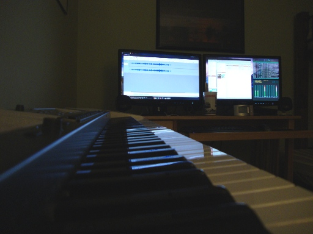
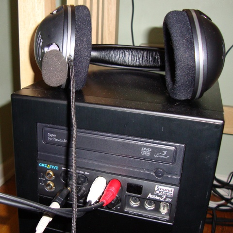

In the home I grew up in music was everywhere. Both my mother and my father are musically gifted and both pursued their love of music when they attended college. Four years was, evidently, not enough for my father and he completed a graduate degree in music composition. As a young child I spent many hours sitting on a piano bench making compositions of my own. For some reason, my two sisters and I had a different relationship with music than our parents. All of us participated in band for a minimum of three years and learned to play instruments and read music. For all three of us, this three year internment was the extent of our formal musical journeys. My younger sister dabbled in piano lessons but for a decidedly brief period of time. Despite our choices to veer away from a life invested in the study of music, I believe that all of us still have a special relationship with it in some form or another.
Ever since I can remember, I would occasionally spend time sitting in front of our old, out of tune, and poorly maintained piano. As a young child I would even throw together sequences of notes that I would then repeat and modify to form somewhat of a pseudo-composition. For whatever reason, I always refused formal lessons. I simply didn't want the act of playing the piano to become a chore or a burden. Once I grew older, I shifted my focus toward movie scores and themes. To this day, I could probably play the chorus for a handful of movie themes off the top of my head. Playing the piano was simply a way to pass some time and provide myself with a sense of accomplishment.
Music has always captivated and affected me in a way that I feel few others experience. I find it nearly impossible to listen to an album from start to finish. I am far more likely to become enamored with the dynamics and sounds of a single song, or, in extreme circumstances, a section of a song. Take, for example, Dream Theater's "Home" from Metropolis Pt. 2: Scenes From A Memory. Few songs in my library can approach this song when comparing total plays. This obsession I develop leads to days, perhaps even weeks, where I find myself listening to the same few songs repeatedly until I know them intimately. Whether it be Jimmy Eat World's "For Me This Is Heaven", Death Cab For Cutie's "Brother's on a Hotel Bed", or one of many versions of "The Ponytail Parades" by Emery, there were times when I probably had the song on repeat for the better part of a week. It surely drives anyone around me insane, but for me each time the song plays I gain a better understanding of it. It is rare for this to lead to song exhaustion and it is even more unlikely for me to ever "retire" a song.
More than once I have entertained the idea of providing myself with the means to become a bit closer to music. While hiking through the wilderness of Maine I decided to give in and satisfy my curiosity. Those who know me well know that I am, at times, obsessively frugal. To make a long story short, it's hard to part me from my hard earned paycheck. Fortunately, I had already made a decision and I began to research digital pianos and electric keyboards. It quickly became obvious that I would settle for no less than weighted hammer-action keys. My hands had spent far too much time on a real piano and the disgusting feel of spring-loaded keys were more than enough to convince me that it was worth it to spend the extra money for great feeling, responsive keys. Through online research I had found that the (now discontinued) Casio Privia PX-575R's were available from multiple outlets (Guitar Center, Sam Ash) as factory refurbished models that were more than affordable. After testing one in person I was quite sure that it was the best keyboard for the money I was willing to spend. Last week I finally bit the bullet and found myself shoving a coffin-sized box into my rather small 1992 Toyota Celica. As I drove home with the gargantuan box blocking my passenger side rear view mirror I had a handful of moments where I wondered what exactly I was doing.

Isn't it pretty?So, why the piano? I could have bought a guitar, or a set of drums, or a variety of other instruments. For me, it was a simple decision. I always felt more comfortable on the piano. I played trombone for a time and it just didn't do much for me. The piano is adaptable and can take on a variety of different sounds that convey a spectrum of emotions. Many of my favorite songs feature a piano to some degree. "Existentialism on Prom Night" by Straylight Run, "Agaetis Byrjun" by Sigur Ros, or "Forever" by Amber Pacific are all examples of this. The digital piano also gives me the options to generate over 700 unique sounds supported by over 100 rhythms.
Once I had it all setup I had to engage in a small battle with ALSA (Advanced Linux Sound Architecture) which resulted in proper piping of audio output through my computer thanks to the amazing longevity of my Audigy 2 ZS. I received the sound card as a graduation gift from high school. For computer hardware, it's age is akin to that of a gray-haired retiree living in Florida. Despite being old, the Audigy 2 ZS has been nothing short of astounding since the first day I used it. It continues to satisfy my needs and allows me to do a much cleaner recording than with a microphone or a standard line in that is found on most sound cards. Audacity works quite well for audio capture and simple tracking and I have found that using the command line based alsamixer utility is more than adequate for my needs. Having the audio piped through a workstation is very beneficial. I can record, track, play songs in the background, and have access to a much cleaner capture quality.

I love my Audigy 2 ZS!I decided to work on learning a song and I chose the main theme from the new series "The Pacific". I wasn't impressed with the series itself, but the main theme captivated me. The series has a beautiful score. I know my version doesn't do it justice, so be sure to check out the version by CalikoCat.
So far, I have enjoyed my investment quite a bit and I look forward to learning to play it better.